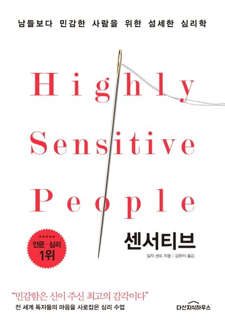

웹디자인 과제 - 컴퓨터공학과 2024101402 김민정

| 저자 | 일자 샌드 |
|---|---|
| 분야 | 심리 / 자기이해 |
| 추천 대상 | 감정 소모가 크거나 쉽게 지친다고 느끼는 사람 |
『센서티브』는 예민함을 고쳐야 할 단점으로 보지 않고, 사람이 자극을 받아들이는 방식의 차이로 설명하는 책이다. 일상에서 쉽게 지치거나 작은 말에도 오래 영향을 받는 사람에게 자신의 성향을 조금 더 객관적으로 바라볼 수 있게 해준다.
이 책은 남들보다 민감한 사람들이 왜 쉽게 피로를 느끼는지, 관계 속에서 왜 많은 에너지를 사용하는지 설명한다. 저자는 민감함을 나약함이나 성격적 결함으로 판단하지 않고, 주변 자극을 더 깊고 세밀하게 받아들이는 기질로 바라본다.
그래서 책의 전체적인 분위기는 강한 자기계발서라기보다, 자신의 성향을 이해하고 조절하는 방법을 차분히 정리한 심리 안내서에 가깝다.
이 책을 읽으며 가장 인상 깊었던 부분은 예민함을 부정적인 성격으로 단정하지 않는 태도였다. 보통 예민하다는 말은 피곤하다거나 까다롭다는 의미로 쓰일 때가 많다. 하지만 이 책은 민감한 사람이 주변의 분위기와 감정을 더 빨리 감지하고 더 많은 정보를 받아들이기 때문에 쉽게 지칠 수 있다고 설명한다.
별것 아닌 말 한마디가 오래 남거나 충분히 쉬었는데도 피로감이 가시지 않는 경험이 꼭 의지 부족 때문만은 아닐 수 있다는 시각이 기억에 남았다. 자기 자신을 이해하고 싶은 사람이나 사람들과의 관계에서 쉽게 지친다고 느끼는 사람에게 추천하고 싶은 책이다.